| Bottom | homepage |
|
Billiard Balls | Why Indeed |
|
|
Molecular Dissociation: from Dust to Dirt
("Cheetos" and instant rust)
By
Judy Wood
This page last updated, July 20, 2007
This page is currently UNDER CONSTRUCTION
and is currently being updated.
[Note: References and Sources will be posted and figure numbers will be corrected (in sequential order) when this paper is finished .]
(originally posted: May 16, 2007)
|
Shortcuts
|
Audio Files
|
|
| XII. Cheetos (or orange rust) · The Story about Hydraulics · David Ray Griffin's Troubling Distortions · Are Experiments Necessary? XIII. A Closer Look at the Psyops of 9/11 · Psyops Videos · Where are the bodies? XIV. Steam? · Burned Tow-Truck Driver · The West Side "Lake" · Workers at Ground-Zero in "fuming haze" · Molten Metal? Where is the Steam Explosion? XV. Fuming rust · Rusty Beams and Pipes · Rusty Cars · More on Psyops |
|
XII. Cheetos or orange rust? Top
|
Figure 2. This is called the "Cheeto" picture because the orange object in the lower left corner looks like a Cheeto.
(9/??/01) Source (also here and here) |
 |
| Figure 3. But, is this photo really what it seems? Note the exposed hydraulics. (9/??/01) Source (also here and here) |
|
Perhaps there is a reason why these same grapplers are not used at metal foundries to reach into ovens of molten steel. Humans wear fairly long protective gloves when barbecuing on a backyard grill. This is done to protect against radiated heat as well as conducted heat (e.g. bumping the grill, getting spattered). Pokers used to adjust logs in an indoor fireplace can't be held long without a thermally-insulated glove or handle. The temperature at which a fire poker becomes too uncomfortable to hold is about the same temperature at which hydraulic equipment is permanently damaged. Note, backyard grills and fireplaces are not generally glowing red hot nor do they contain pools of molten steel.
|
The Story about Hydraulics Top
|
|||||||||||||||||||||||||
| Brendan Casey, "Hydraulic Equipment Reliability: Beyond Contamination Control". Machinery Lubrication Magazine. July 2005 (6/16/07 accessed) Source |
|||||||||||||||||||||||||
David Ray Griffin's Troubling Omissions and Distortions Top
|
Quoting from:
David Ray Griffin, Debunking 9/11 Debunking: An Answer to Popular Mechanics and Other Defenders of the Official Conspiracy Theory, Northampton MA: Olive Branch Press, 2007. |
||
|
page 314
|
||
page 315
Griffin seems to be saying, "all I need is the testimony of people on the payroll."
-- Tully, Loizeaux, and Robertson were all paid millions of our tax dollars. Are they unbias witnesses? |
||
|
pages 181-182
|
It appears that David Ray Griffin values the hearsay of those on the payroll more than physical facts. This is very troubling. The molten metal myth seems to have been created as part of the official cover-up story. The above chart which shows the maximum operating temperature for hydraulics supports what NYT reporter Jim Dwyer has said. However, Griffin insults Dwyer by stating he "fully displayed his ignorance of crucial facts." But the crucial facts support Dwyer, namely, that high temperatures would have indeed permanently damaged hydraulic equipment. The facts in this matter are well-established and are available in mechanical engineering handbooks as well as on the internet [link]. It appears that Griffin is actually the one who has "the tendency to favor a priori arguments over empirical evidence."
A common technique for deception is to accuse his opponent of what the accuser does to hopefully put him above suspicion. Another example of this deception is for someone to accuse his opponent of "ad hominem attacks." In reality, the one making accusations of "ad hominem attacks" is actually the one committing "ad hominem attacks."
But, let us look at the actual article David Ray Griffin said he quoted from.
[to be added]
| Presented as Appearing in the October 9, 2001 New York Times by James Glanz From Torn Steel, Cold Data of Salvage |
|
|
Are experiments necessary? Top
|
Steven Jones often talks about the "pools of molten metal" and "ponds of molten metal" in the basements of the WTC towers. He's also repeated the story of the steel-toed boots of the workers melting "after just a few hours" doing work on "the pile" at the WTC site.
Steven Jones also states that you need to run experiments to prove something. OK, if he's going to use that story of the workers' steel-toed boots melting because of the molten metal on "the pile," he needs to do experiments. (This is his rule.) A true scientist values observations and careful analysis of evidence as essential, whether the evidence already exists or if it is obtained through an experiment. So, if Steven Jones believes experiments must be conducted to confirm anything, then he needs to put on some steel-toed work boots and slosh across molten metal and then report back his results about what happened to the boots. I think it was said the boots melted in "a few hours" on the pile, which means at least two hours. So, Jones needs to stand in the molten metal for two hours to see what happens to the boots. |
A Closer Look at the Psyops of 9/11 Top
|
"There are but two powers in the world, the sword and the mind. In the long run the sword is always beaten by the mind."
Napoleon Bonaparte |
Psyops is an abbreviation for psychological operation.
|
Definition of Psychological Operations:
'Psychological Operations: Planned operations to convey selected information and indicators to foreign audiences to influence their emotions, motives, objective reasoning, and ultimately the behavior of foreign governments, organizations, groups, and individuals. The purpose of psychological operations is to induce or reinforce foreign attitudes and behavior favorable to the originator's objectives. Also called PSYOP. See also consolidation psychological operations; overt peacetime psychological operations programs; perception management. ' US Department of Defense Source |
 |
 |
| Figure 5. Original image. The fellow with the shovel, wearing a blue shirt, appears to be standing down in this hole. (9/12/01) Source |
Figure 6. This is the image Jones captions "Workers evidently peering into the hot “core” under the WTC rubble." (9/12?/01) Source (p. 18) |
| Figure 7. The same section of the original picture that Steven Jones shows an altered version of. (9/11/01) Source |
Figure 8. Steven Jones said those bright-white spots are evidence of thermite. I think you are right that it's also so dark that you can't see what's going on. The psyops is to train the viewer to see "thermite" when they see this photo (or Rick Siegel's video, 911Eyewitness). (2/1/06) Source: Slide 35 Also, here is a Google video of the presentation, with S Jones showing the slide. Skip to 49 mins and 4 secs for this slide. (Netscape 7 needed) Thanks to Andrew Johnson for providing this. |
|
Thermite, WTC Dustification, and Steve Jones
|
|
| Video 1.
(0:02:42) URL From the presentation made by Steven Jones, February 1, 2006. |
Video 2: (0:00:53) URL Thermite and Ice explosion. 11 pounds of Fe3O4,Al Thermite over ice blocks. The resulting explosion is a steam explosion. The components were purchased on eBay. From: officialbs113 Added: February 24, 2007 |
| "Is Steve Jones showing us a very much enhanced image to "implant" his thermite ideas when the image is really showing Dustification?" | Imagine what would have happened on 9/11/01 if there had been molten metal |
XIII. A Closer Look at the Psyops of 9/11 Top
|
9/11 Ground Zero Molten Steel
|
Giuliani and WTC Fires
|
| Video 3. This is a serious cover-up video! | Video 4. Does Mayor Giuliani actually believe it was 2,000° where he was standing? (Just where IS Rudi Giuliani?) |
| (0:03:01) URL | (0:00:25) URL |
| I don't believe any of the firemen or emergency workers in Video 2, above, were knowingly being dishonest. Please see the next section for more explanation about why these people might be say things that don't make sense. |
|
VIDEO TRANSCRIPT: (from above video)
Reporter: What happened to the concrete?
Fireman: See that stuff he's pulling out? Person: What was that chief? Fireman: Ya know we're going to hold off on the water. You see that stuff he's pulling out right now? [pointing to a mechanical digger]. Person: Yeah Fireman: It's red hot. If we hit it with too much steam he won't be able to see what he's doing. Person: Great
Fire Chief: You see how this debris is still smoking? That's from the fires that are still burning. Eight weeks later we still got fires burning. Every now and then ,one of the pieces of equipment will dig in, will open up a small area. The oxygen will rush in and you'll get this plume of brown-black smoke coming up. That's because that fire just got more Oxygen. So I mean these things are burning. At one point I think they were about 2800 degrees.
V/O: Underground fires, ignited by burning jet fuel, smoldered for months, fed by molten steel and buried carpeting, office furniture, wood panelling and paper.
Woman in hard hat: Steel-toed boots is one of the biggest things. Out still on the rubble it's still, believe um, 1100 degrees. The guys' boots just melt within a few hours.
Fireman : You'd get down below and you'd see molten steel. Molten steel running down the channel rails, like you're in a foundry. Like lava in a volcano.
Transcript thanks to Andrew Lowe Watson, Andrew Johnson, and CB_Brooklyn.
|

Where are all the Bodies? Top
| [Return to Molten Metal video (Video 2) above.] In NO WAY am I saying the fireman was lying about "molten metal"! In addition, memories can be manipulated. See false memory syndrome for more information.) Consider the video below. At about 2:10 into the video, Scott Pelley interviews Dr. Tony Dobber and asks him, "Where are all the bodies?"
Dr. Dobber's world has been turned upside down, nothing makes sense to him, and he's desperate for an explanation. Then, if he's provided with one, he will have something to hold on to. Why would he want to look back and experience this extreme horror again? It is very unlikely that he will look back and relive that event and come out with a different perspective. |
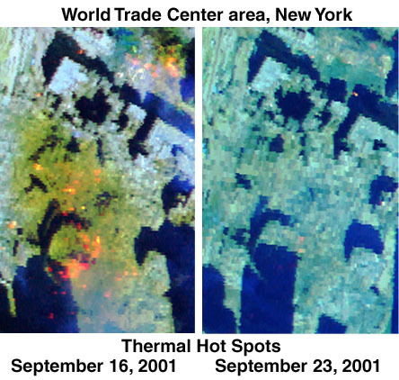 |
 |
XIV. Steam? Top
|
Steam Explosion
|
Steam Explosion
|
| Video 6. New York City steam explosion, July 2007. Ground Zero did not look like this. (0:00:20) URL Recorded: July 18, 2007 |
Figure 16. Steam shot from the broken pipe in New York City until the steam was turned off. (7/18/07) USAToday |
|
from wikipedia:
"In common speech, steam most often refers to the white mist that condenses above boiling water as the hot vapor ("steam" in the first sense) mixes with the cooler air. This mist is made of tiny droplets of liquid water, not gaseous water, so it is no longer technically steam. In the spout of a steaming kettle, the spot where there is no condensed water vapor, where there appears to be nothing there, is steam." "In physical chemistry, and in engineering, steam refers to a vaporized gas. ...It is a pure, completely invisible gas (for mist see below). Pure water steam (unmixed with air, but in equilibrium with water-liquid) has a temperature of around 100 degrees Celsius at standard atmospheric pressure, and occupies about 1,600 times the volume of liquid water (steam can of course be much hotter than the boiling point of water; such steam is usually called superheated steam). In the atmosphere, the partial pressure of water is much lower than 1 atm, therefore gaseous water can exist at temperatures much lower than 100 °C (see water vapor and humidity)." __________________ "When liquid water comes in contact with a very hot substance (such as lava, or molten metal) it can flash into steam very quickly; this is called a steam explosion. Such an explosion was probably responsible for much of the damage in the Chernobyl accident and for many so-called 'foundry accidents'. Steam's capacity to transfer heat is also used in the home: for cooking vegetables, steam cleaning of fabric and carpets, and heating buildings. In each case, water is heated in a boiler, and the steam carries the energy to a target object...." Source |
| The Independent One dead in New York steam explosion By Adam Goldman Published: 19 July 2007 |
| "The steam pipes are sometimes prone to rupture, however. In 1989, a gigantic steam explosion ripped through a street, killing three people and sending mud and debris several stories into the air. That explosion was caused by a condition known as "water hammer," the result of condensation of water inside a steam pipe. The sudden mix of hot steam and cool water can cause pressure to skyrocket, bursting the pipe. " |
|
NYTimes:
Steam Pipe Explosion Jolts Midtown; One Person Is Confirmed Dead By Sewell Chan July 18, 2007, 6:18 pm |
| "A steam pipe, 24 inches in diameter, installed in 1924, burst. It may have burst because of cold water from the rain, it may have burst because of a water-main break that we don't know about yet, but in any case, the steam pipe broke and that's what you've seen." |
| Figure 17. Once the valves to those pipes were turned off, the hot vapor was no longer visible. No "fuzzballs" or mysterious "fuming" from the streets followed this event. Even though this truck was subjected to hot steam, it doesn't appear to have suffered any rust damage. It is especially worth noting the size distribution of the debris from the explosion. It varies from large chunks to medium chunks to small chunks of pavement, etc. Images from 9/11 show a fairly uniform dust size with no large chunks, no medium chunks, and no small chunks of concrete floor, wallboard, desks, chairs, etc.. (7/18/07) source |
Burned Tow-Truck Driver Top
| Associated Press, Yahoo news NYC blast could cost businesses millions By PAT MILTON, Associated Press Writer Sat Jul 21, 12:09 AM ET |
|
| Besides the fatality, more than 40 people were injured in the blast. The most seriously hurt was 21-year-old Gregory McCullough. He was in critical condition Friday in the burn unit of New York Presbyterian-Weill Cornell Medical Center. McCullough was driving a tow truck that was thrown into the air by the powerful geyser of steam. He landed in the crater gouged out by the blast and suffered third-degree burns over 80 percent of his body. The pipe that exploded was part of an underground network of mains and service pipes that deliver steam to thousands of customers — including the Empire State Building, Rockefeller Center and the United Nations — for such things as heat and air conditioning. " |
|
|
| LATimes 1 killed after pipe explodes in New York Terrorism is ruled out in the underground steam blast; dozens are hurt. By Erika Hayasaki, Times Staff Writer July 19, 2007 |
|
"Rain and thunderstorms pounded the area most of the day, and Bloomberg said the most likely cause of the explosion was "cold water getting into the pipe, and cold water apparently causes these to explode." In 1989, a steam explosion in New York's Gramercy Park killed three people and sent a geyser of white-hot steam 18 stories into the air." |
| Figure 18. Steam is hot and dangerous. Note that these firemen don't walk through the steam. Compare this with the images of the cleanup workers after 9/11. (7/18/07) source |
| Three Letters Re: Bullet Casting: A (Relatively) Simple Introduction, by AVL |
| "I have two notes regarding casting your own bullets (or any other metal for that matter): First: One piece of safety equipment that you really should have on hand when casting any metal is dry sand. Make sure you have at least 25 pounds of dry sand at the ready. If there is a metal spill, dump the sand on it and it will contain the flow and cool it quickly, plus it will cut [off] the supply of oxygen, preventing fire. Second: A fire extinguisher is good to have to put out fires, but with molten metal flowing all over the place lighting things on fire, a fire extinguisher is not enough. You must never put water on molten metal, because it will cause a steam explosion. [emphasis added] This will burn you, and send splatters of molten metal flying all over the place making your problems much worse. Choose a dry chemical fire extinguisher that is rated to be used on electrical fires. " |
The West Side "Lake" Top
 |
 |
|
|
Figure 19. Here's a photo from the southern "shore" after a water-main broke. Note the "steam" appearance along the "northern shore" that cannot be the result of "hot water" because there are live people wading along that shore. (see next figure)
(9/11/01) Source: |
Figure 20. There's a person wading out into it. He doesn't look like a boiled chicken.
(9/11/01) Source: |
Workers at Ground-Zero in "fuming haze" Top
| Figure 21. Steam? If this were steam, these workers would have been cooked. If this were as hot as a grill, these people would become something that looked more like a grilled-cheese sandwich. The hoses to their torches would melt and ignite the fuel. (9/12?/01 entered) Source [return to above] |
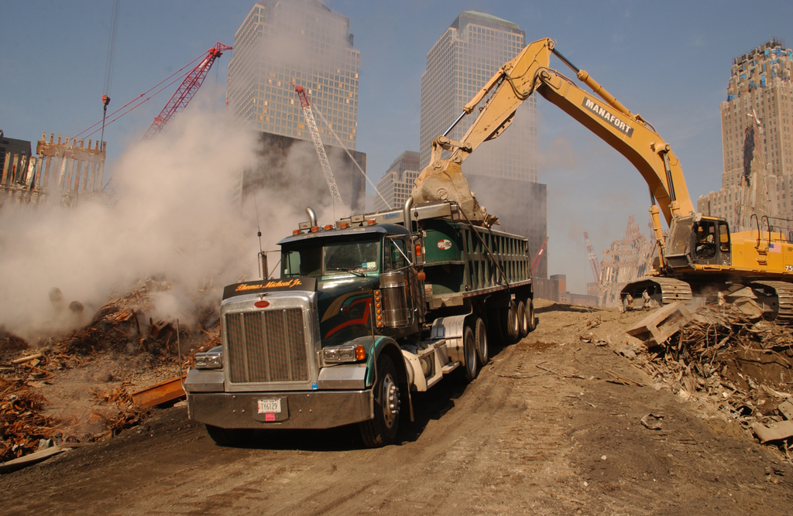 |
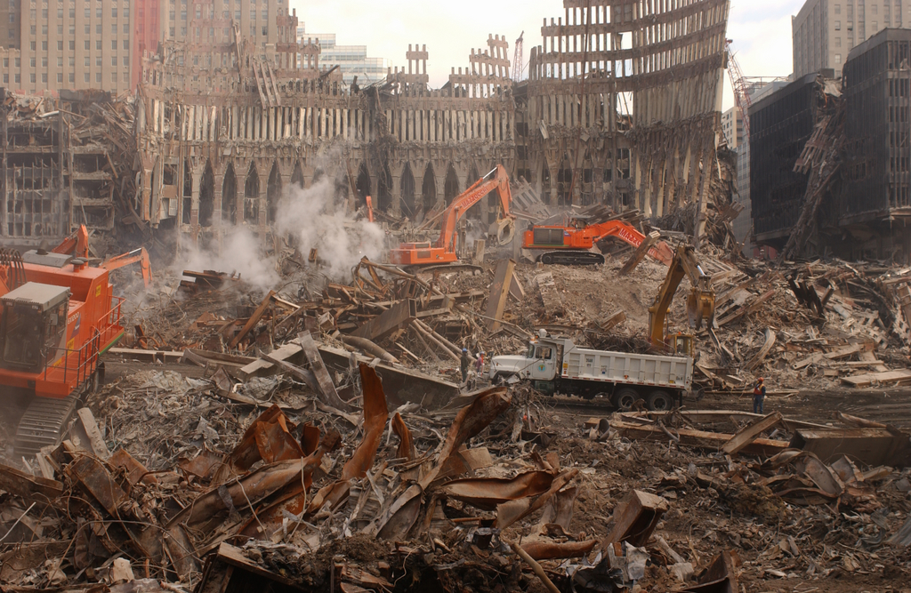 |
|
Figure 22. If this were steam from "molten metal," the vehicles in that area would be permanently damaged. The truck wouldn't be parked so close to it. Note the extraordinary orange rust on the steel beams (left side of photo).
(10/13/01) Source: |
Figure 23. If this "pile" were 1,100°F, those grapplers would be fatally damaged before the operators had time to drive out there to the middle of the pile.
(10/13/01) Source: |
Molten Metal? Where is the Steam Explosion? Top
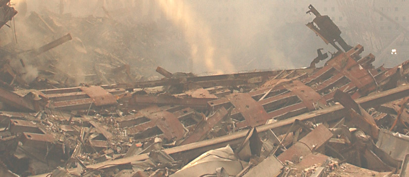 |
 |
| Figure 24. Dry weather. Note the appearance of "steam" in the background. (9/15/01) original Source: (Click on photo to enlarge.) |
Figure 25. Dry weather. Note the "steam" appearance. (9/16/01) original Source: (Click on photo to enlarge.) |
{kind=link}
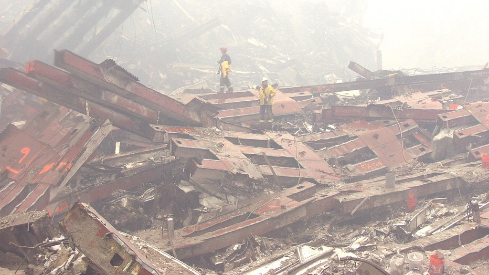 |
 |
| Figure 26. Wet weather. Where is the "steam"? (9/20/01) original Source: (Click on photo to enlarge.) |
Figure 27. Wet weather. Where is the "steam"? (Similar to the previous figure, but more resolution.) (9/20/01) original Source: (Click on photo to enlarge.) |
| If there were molten metal in the basements, wouldn't you expect more "steam" in wet weather than in dry weather (more steam, as in a steam explosion)? Most every adult knows not to put water onto a grease or oil fire. What would happen if they did? "Pure water steam (unmixed with air, but in equilibrium with water-liquid) has a temperature of around 100 degrees Celsius at standard atmospheric pressure, and occupies about 1,600 times the volume of liquid water..." [source] So, if water is thrown onto hot oil, it will suddenly heat up and become steam, expanding in volume by about 1,600 times, producing an explosion. So, perhaps we should ask why there are scientists and engineers who promote "molten metal at the WTC for weeks" stating this as evidence of "a classic controlled demolition"?
|
 |
 |
|
Figure 28. This is the "basement" of WTC1. Where's the fire?
(10/28/01) Source: |
Figure 29. Why are the fumes coming out of wet soil?
(10/28/01) entered Source: |
I note there are few pictures from 9/14/01. Perhaps all the pictures had dirt trucks in them. ;-)
Some may be "dust," but I don't see how you can have "dust" sitting on top of a pile after you've hosed it down.
XIV. Fuming Rust Top
| Figure 30. Instant rusting into the air? Does fire cause instant dust? I don't think so. (10/13/01 entered) Source |
| Figure 31. Instant rust? But, not all of the exposed steel was rusted. (9/12?/01 entered) Source |
|
“Office fires can't do that”
(92 k)
from Ace Baker's, "Blown to Kingdom Come" (6.2 MB) or local archive "Blown to Kingdom Come" (6.2 MB) |
Does fire cause instant rust? I don't think so, unless it is perhaps a chemical fire.
 |
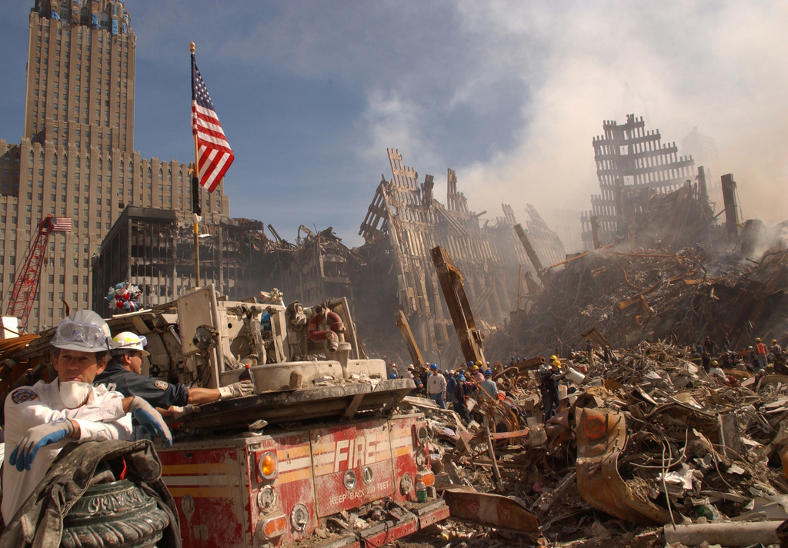 |
| Figure 33. Why did so much of this "steel" rust in less than two days? Why did some of the more-exposed pieces not rust much? (9/13/01 entered) Source |
The following two photos are a view east, from West street, and both are probably early afternoon. The two images appear to be taken on days not too far apart, if not back-to-back days, because the "stuff" on the truck is in a similar place. (Note the white buckets as well as the metal "coil" on top.) perhaps 9/12-13/01? The fire truck has dust on it more than dirt. I don't see WTC7, so I don't think it's 9/11. In the first photo, the white fluff is on the wheatchex in the foreground. So, it hasn't rained, yet. (First big rain I noted was on 9/14/01.) Road graders have gone through. They've only taken the first pass with the road-grader/street-cleaner, so that also supports it being early. Maybe they aren't on back-to-back days. That's a lot of stuff they'd need to cart away. But, they wouldn't be directing the search dogs for too long.
The flag is not in the above and there are the "day after" flowers on the truck. I've noticed flowers on vehicles that were affected. Perhaps they're for those who died in the vehicle? The rusty coils of stuff looks very rusty in the second photo below.
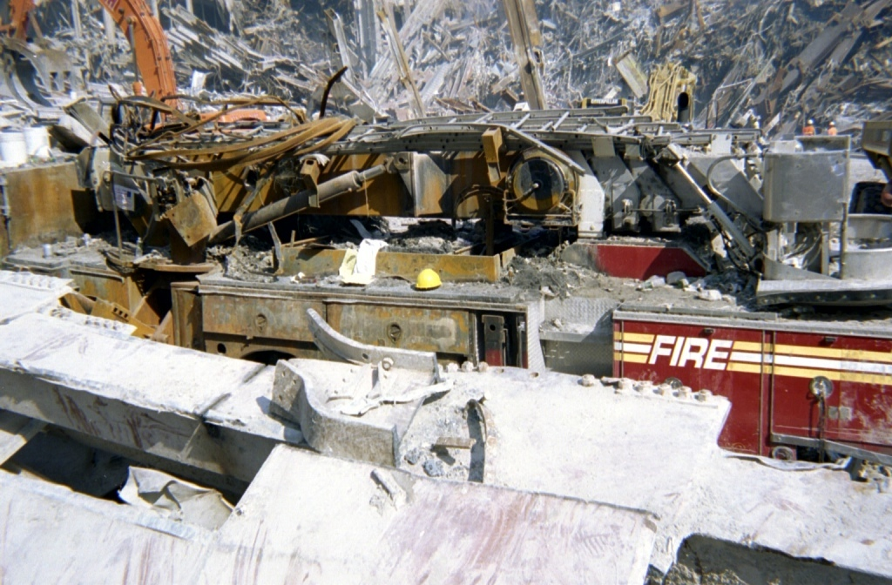 |
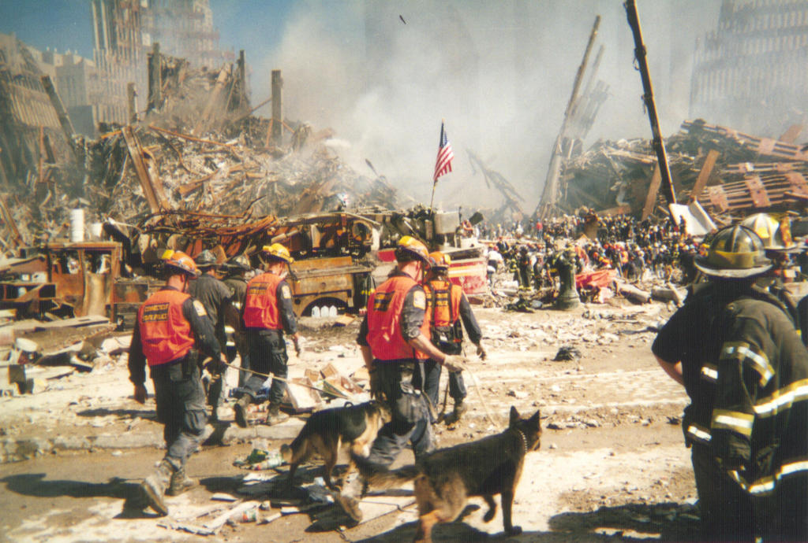 |
|
Figure 34(a). Rust
(9/12-13?/01) Source: |
Figure 34(b). More rust
(9/13?/01) Source: |
| Figure 35. Perhaps that "Cheeto" in the lower-left corner of the photo is actually a rusty pipe. (9/??/01) Source |
| Figure 36. Original photo. It appears that pipes either rusted a lot or not at all. (9/16/01) Source |
| Figure 37. This is the upper-left quadrant of the previous photo. (9/16/01) Source |
Figure 38. This is a photoshopped color adjustment, adjusting the color curves for particular colors. This illuminates all of the rust with the same color in the previous photo. (9/16/01) Source |
Rusty Cars Top
 |
|
| Figure 39. Car 2723 was toasted inside and out... and then rusted. (9/12?/01) Source |
Figure 40. This toasted interior of car 2723 was consumed except for the fire extinguisher. How does a car rust that fast on the inside? If it had been on fire, shouldn't we see a blackened-burned appearance? Instead, we see a tremendous amount of rust on the inside of the car. Why is that?
(9/12?/01) Source: |
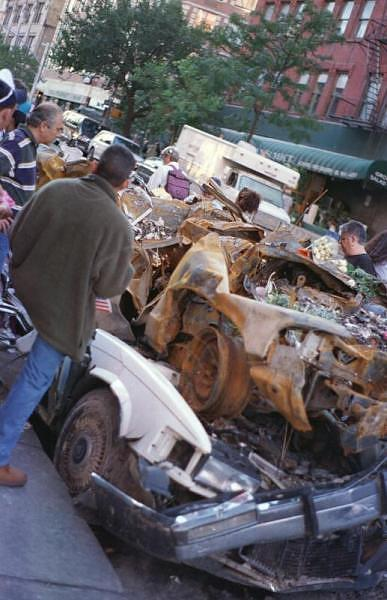 |
|
Figure 41. Why is this one car rusted and the other is not?
(9/13?/01) Source: |
 |
 |
|
Figure 42. Presumably these cars are finally being towed away from that lot. Those wheels look fairly good which means they probably aren't steel.
(9/?/01) Source: |
{kind=link}
{kind=link}
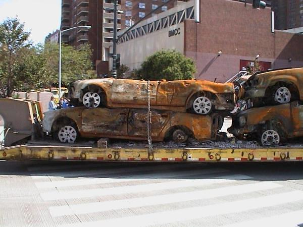 |
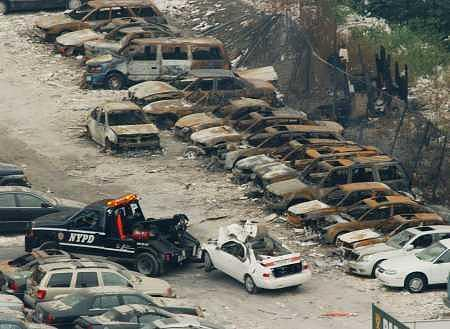 |
|
Figure 44. Presumably these cars are finally being towed away from that lot. Those wheels look fairly good which means they probably aren't steel.
(9/?/01) Source: |
Figure 45. Presumably these cars are finally being towed away from that lot. Those wheels look fairly good which means they probably aren't steel.
(9/?/01) Source: |
 |
|
Figure 46. The background is near the WTC
(9/?/01) Source: |
 |
|
Figure 47. The rust is noticeable
(9/23/01) Source: (JW cut down from NOAA) |
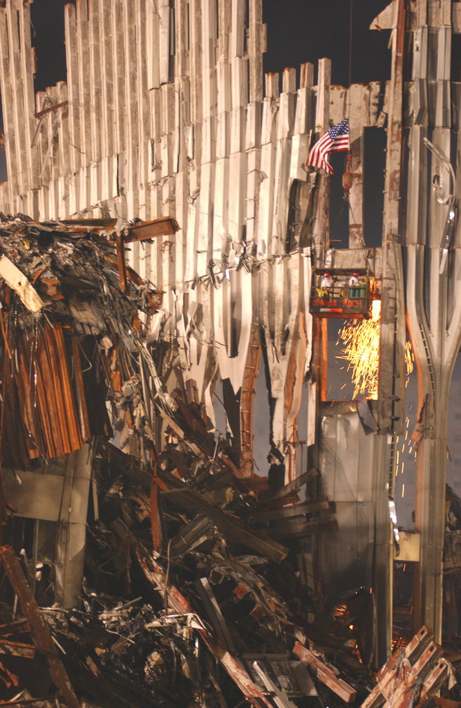 |
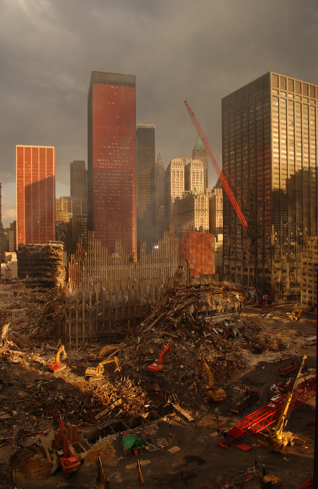 |
|
Figure 48. The remains of WTC2 are on the right and the 2-3 floor remaining "stub" of WTC3 is on the left. Note the intense rust hanging off the top of the WTC3 stub. Also, there is an impressive amount of rust on the tops of the wheatchex just about the flag on WTC2.
(click on the image for an enlargement) (10/09/01) Source: |
Figure 49. A view east. Nice dirt pile! Grapplers wouldn't be operating if that area were hot. Why are they pushing dirt around? They don't appear to be loading up debris, but simply moving dirt around.
(10/5/01) Source: |
More on Psyops Top
| Marketing an Invasion How to Sell a War By JEFFREY ST. CLAIR (6/12/07) source |
|
Curiously, the Jessica Lynch story is a reminder of the Todd Beamer story. There are many other interesting parallels in the above story, as well. |
| Figure 50. The antenna on the roof of WTC1 was designed to withstand lightening bolts. (pre 9/11/01) Source |
| Figure 51. Why weren't these people warned? (9/12?/01) Source |
Continue to next page.
| Top | homepage |
|
Billiard Balls | Why Indeed |
|
|
|